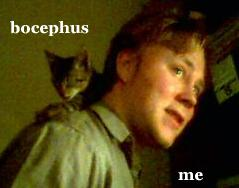

Wow, this head cold has hit me hard! Even mighty DayQuil has not lessened the effects. Nonetheless, as I am stricken with the plague on my week off, I have managed to throw up a couple of new gallery albums of two shows Kelly and I went to see.
First, BR5-49 and Souther Culture on the Skids @ Headliners
Second, Ben Kweller (with Adam Greene) at Top Cat’s in Cinci
Also, as an added bonus — cat pictures!
Oh yeah, word up to all my LAN-gaming homies that threw down over here on Saturday. Now, off to the couch I go!
¨
Just got back from Cinci, went to see Ben Kweller, and in the time between leaving the house and getting there, a cold has racked my body! Guinness provided me with some temporary and tasty relief whilst at the show (which was on-time, and ready-to-rock), but now I have quaffed the red potion — the nighttime, sniffling, sneezing, hello-floor-how-are-you-my-aren’t-you-comfortable medicine. Time for bed. Woman, bring my bed!
Some great photos will be posted soon, and Geoff, if you read this, I have a present for you that is delightfully BK-related.
¨
So, a couple weeks ago, whilst dining on the buffet at Vivarazzi in wonderful down-town Jeffersontown, my comptriates and I were discussing absurd arcade games, and how great they are.
Mr. Rasnake, who normally goes by Matt, mentioned a game involving a large plastic finger, and a posterior mounted to an arcade cabinet. “Oh, it was on some page on the interweb,” he mentioned. Shocked at the fact that there were actually pictures of bottoms on the intarweb, I had to find out. Well, after searching for “japanese arcade finger butt” on google, I found a article on “Boong Ga Boong Ga” over at Wired (btw, this article has been dismissed by Japanologist-in-residence gary as being “bullshit”, in that he’s never seen the game, and it is by no means “sweeping Japan”, also it’s South Korean in origin).
In any case, my travails about the rolling countryside that is the intarweb led me to Syberpunk, a site dedicated to “the quirkiness of Japan”, in which I found their tribute to Boong Ga Boong Ga.
So yeah, their cell-phones are better, their games are wackier, and their women will wear t-shirts like this (see thumb to the right).
Why can’t we get Japanese t-shirts that say stuff like “my mother shucks oysters in continuous enjoyment” in Japanese?
¨
Kelly and I went to see Michael Moore’s Bowling For Columbine on Tuesday night. While at times a bit scattershot and clingy to the heartstrings, the message gets through well enough. It was moving enough to have Kelly note “I think I need to see more things like that.” “Why, because it challenged your entire right-wing upbriging?” I asked. “Yeah, pretty much,” she answered. She never fails to amaze, that girl. That’s pretty much all I could ask for in a documentary like this, and calling it a documentary is at sometimes a stretch. Moore has stated a number of times that he doesn’t like being in front of the camera, and yet he’s probably on-screen a good 50% of the time in this film, which is a bit of a departure from his first film. So, despite the extremely personal and emotional notions that pepper this film, his point comes across clear and resounding: “There is no good reason why we should have 100 times the gun-murder rate in America that Canada has”.
We went to the Bluegrass Brewing Company’s Bluegrass Jam Night last night, and met up with Jackson Cooper, friend and pluckin’ bass player. There were quite a few folks there, many of them women (women fiddlers are HOT, make note of this). Banjos, mandolins, guitars, bass and fiddle were all present, and the clientele was as far-flung and varied as you could possibly imagine. Punk-rockers next to UK fans next to school marms. It was great.
So, I’ve just been listening to “Judy Is A Punk” by the Ramones over and over again, something akin to my “White Stripes” odyssey a couple of months back. I can’t get enough. Jackie is a punk! Judy is a runt!
¨
Well, on Saturday, we threw-down and some folks threw-up on the belated occasion of Gary and Hunter’s birthday. Many a Guinness were consumed. Simulcast with Japan was achieved. There was dancing. There was carousing. And most of it was caught on digital film.
On a related note, my Aunt Cindy was in town, so mom brought her by to see the homestead, and we ate some tasty mexican food.
On an even further related note, I’ve moved a number of galleries into the family section, and even created a sub-gallery just for our pets.
Best line of the weekend: “Now, when we reach the door of Old Town Liquors, everyone put on their sober faces.”
¨
i can think of no better song than The Ramones’ Judy is a Punk to intro characters in a movie (thanks to Wes Anderson).
Just give it a listen, and imagine the characters in a movie, one by one being freeze-framed and their name popping up. Tee-hee.
¨

katrina here at work found a cat outside — he’s certainly affectionate, and purs a lot. He’s kinda rough and tumble. I think i’ll call him Bocephus.
update: see the bocephus gallery
¨
yeah, i know what you are saying — BORING, but proofreading the Project Gutenberg texts in conjunction with thousands of others is an easy way to contribute to this project. check out the Distributed Proofreading project, and afterwards, go and read some ETexts.
¨
watched scratch last night with hunter and najati. scratch is all about turntablism — the art of the DJ. it’s a strange art, for sure. it’s like a technological regression that spurs further progression, the use of outdated (to some) technology to create new sounds. while publically, they were being pushed into the background when rap really exploded in the 80′s, the faithful kept the movement alive. what resulted was a tightly knit group that kept mainly to themselves. While battling and sparring against each other had its charm, there were some outside of the group who said that the isolationism would do them no good, and some inside agreed. Scratch takes a wonderful look at the art, and portrays well not only the artistry of the music, but the culture of the scene as well.
Highly recommended, even for those who aren’t into hip-hop. The technical scenes are well documented, and the sound quality is EXCELLENT.
¨
meet keith mcgill, a local comedian, and education specialist with the Louisville Science Center. We saw him last night at The Comedy Caravan, and tore up the joint! I enjoyed him more than the headliner, actually (as far as laughs-per-minute go).
also, he enjoys a good necktie.
¨


{kind=link}